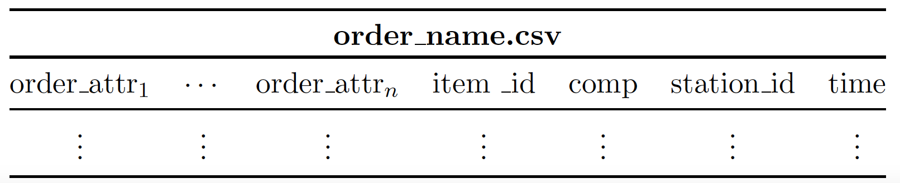

Simulation output
Two predefined output formats are available: csv and hdf5. In both formats the output is provided in tabular form. In the case of csv, a file is created for each simulation object (station, order, factory) whose data should be saved. In the case of hdf5, a single file is created that contains a group for each simulation object.
The general structure of the output files is described first, followed by the specifics for the individual simulation objects (station, order, factory).
General structure
The output files are in tabular form, to which rows are added during simulation. The first columns contain all user-defined attributes and the following columns contain some object (station, order, factory) specific information.
For the tables of stations and orders it applies that for each processing that is carried out on a machine of a station, the corresponding table of the order and the station are extended by a row that containing the relevant information regarding the time point at which the respective interaction is completed. Whereas the factory table is extended by one row after each call of a global function.
Output station
The first columns contain the respective user-defined values of the station attributes. While the last two columns contain the machine number and the current simulation time.

The machine number corresponds to the index of the machine of a station. The index starts for each station with zero and can be read during the simulation to implement machine specific behavior.
The simulation time corresponds to the time point in which a machining or assembly operation was completed successfully at a machine.
Output order
Similar to the output files of the other simulation objects, the first columns contain the values of the user-defined attributes. The following columns contain the item ID, assembly comp, station ID and simulation time.
{kind=link}
The item ID is a unique integer ID increasing throughout the simulation.
The column comp is only included if items of the order are assembled to items of another order in the process. The column contains the unique item ID of the item to which the item referred to in the column is assembled. If the item is not assembled in the first stage, the value nan will appear in the rows created before this assembly.
The station ID is the ID of the station at which the corresponding row was added. The station ID is assigned automatically and corresponds to the index position (starting with 0) of the station in the input JSON file. Additionally, there is the index -1. This index corresponds to the rows that are added directly after the creation of new items in the source.
The simulation time corresponds to the time point in which a item was processed successfully at a machine.
Output factory
The first columns contain the values of the user-defined global attributes. While the last column contains the simulation time at which the attribute values of the attributes were recorded.

Note
Different from the stations and the orders, a row is created after each execution of a global function. If there are no global functions, no rows are added. In this case an empty global function can be created, which only yields timeouts in required time steps.